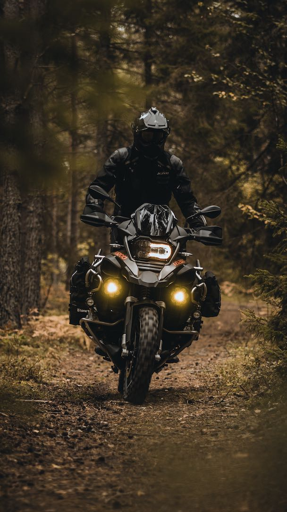

SOME PEOPLE
SOME PEOPLE
WANT IT TO
HAPPEN, SOME
WISH IT WOULD
HAPPEN, OTHERS
MAKE IT HAPPEN.
Gym and adventure biking are both popular
forms of exercise and recreation. The gym offers a controlled
environment with access to a wide variety of equipment, making
it a great option for those who want to build strength and endurance.
Adventure biking, on the other hand, allows individuals to explore
the outdoors and take in the natural scenery while getting a workout.
Both activities offer unique benefits, and many people enjoy participating
in both. Whether you prefer the structure and convenience of the gym or the
freedom and adventure of biking, these activities can be a great way to stay
active and healthy.
